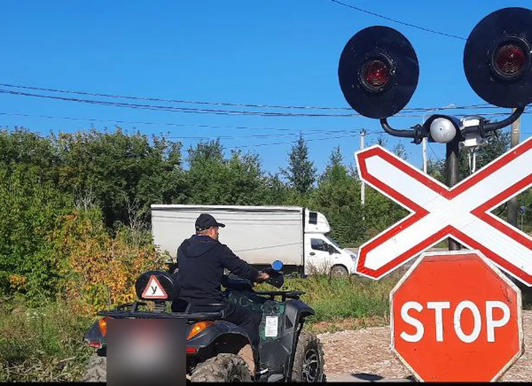
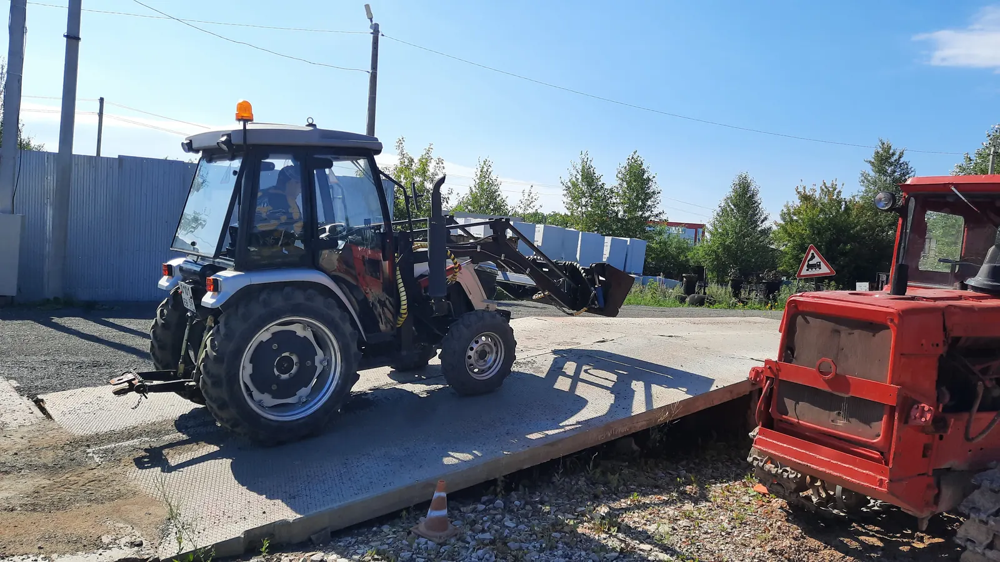

Категории удостоверения тракториста-машиниста
Девять категорий самоходных машин: что попадает в A I–A IV, чем B отличается от C и D, что такое E и F. С точными формулировками из Правил допуска и границами по мощности двигателя.
Девять категорий. Не пять, как иногда кажется по памяти о водительских правах, а именно девять: четыре подкатегории A, дальше B, C, D, E и отдельно F. Все они закреплены одним пунктом одного документа — пунктом 4 Правил допуска к управлению самоходными машинами и выдачи удостоверений тракториста-машиниста (тракториста), утверждённых постановлением Правительства РФ от 12.07.1999 № 796 (документ действует до 1 сентября 2028 года).
Здесь — полный перечень с точными формулировками нормы, без пересказа своими словами там, где пересказ мог бы исказить границу.
Категория A: не про трактор, а про внедорожность

Категория A в Правилах допуска — это не одна позиция, а зонтик для четырёх подкатегорий. Общее определение звучит так: «автомототранспортные средства, не предназначенные для движения по автомобильным дорогам общего пользования либо имеющие максимальную конструктивную скорость 50 км/ч и менее».
То есть критерий два: либо машина в принципе не для дорог общего пользования (по конструкции), либо у неё ограничена максимальная скорость 50 км/ч. Достаточно одного из двух. Дальше внутри категории A машины делятся по массе, числу мест и назначению.
A I–A IV по пунктам
| Подкатегория | Формулировка Правил допуска |
|---|---|
| A I | внедорожные мототранспортные средства |
| A II | внедорожные автотранспортные средства, разрешённая максимальная масса которых не превышает 3500 кг и число сидячих мест которых, помимо сиденья водителя, не превышает 8 |
| A III | внедорожные автотранспортные средства, разрешённая максимальная масса которых превышает 3500 кг (за исключением относящихся к категории A IV) |
| A IV | внедорожные автотранспортные средства, предназначенные для перевозки пассажиров и имеющие, помимо сиденья водителя, более 8 сидячих мест |
Оговорка «за исключением относящихся к категории A IV» в формулировке A III — не декоративная деталь. Без неё пассажирский автобус массой свыше 3500 кг пришлось бы относить сразу к двум категориям. С оговоркой сначала проверяется, не пассажирская ли это машина с числом мест больше восьми (тогда A IV), и только если нет — считается масса для A III.
Категории A II, A III и A IV объединяет ещё одно условие, не связанное с самим определением техники: к экзамену на эти категории допускают только тех, у кого уже есть российское национальное водительское удостоверение на технику соответствующей категории и стаж управления не менее 12 месяцев. Подробный разбор этого требования — в статье «Категории A II, A III и A IV: кому они доступны». Возрастные пороги по всем девяти категориям, включая A I–A IV, — в статье «Со скольких лет можно получить права на трактор».
Категории B, C, D: одна шкала мощности

С внедорожными машинами разобрались, дальше — самоходные машины в привычном смысле: тракторы и похожая техника, где категория определяется не назначением, а физикой — мощностью двигателя и типом хода.
Категории B, C и D делит одна непрерывная шкала мощности двигателя в киловаттах:
| Категория | Тип хода | Мощность двигателя |
|---|---|---|
| B | гусеничные и колёсные | до 25,7 кВт |
| C | колёсные | от 25,7 до 110,3 кВт |
| D | колёсные | свыше 110,3 кВт |
Важная асимметрия: категория B закрывает и гусеничные, и колёсные машины мощностью до 25,7 кВт — тип хода здесь неважен. А вот выше этого порога тип хода начинает иметь значение: колёсные машины идут по категориям C и D в зависимости от мощности, а гусеничные выше 25,7 кВт выделены в отдельную категорию E.
Для ориентира, но не для определения категории: 25,7 кВт — это приблизительно 35 л. с., 110,3 кВт — приблизительно 150 л. с. Это пересчёт по общему коэффициенту (1 кВт ≈ 1,36 л. с.), а не норма — точное значение мощности указывается в паспорте самоходной машины, и категорию нужно определять по киловаттам, а не по прикидке в лошадиных силах. Как именно это делать на практике — в статье «Какая категория нужна на вашу машину: разбор по мощности».
Отдельный частый вопрос — какая категория нужна на фронтальный или вилочный погрузчик. Короткий ответ в том, что «категории погрузчика» как отдельной позиции в перечне нет — разбор в статье «Какая категория нужна на погрузчик».
Категория E: гусеницы отдельно
Категория E — «гусеничные машины с двигателем мощностью свыше 25,7 кВт». По сути это верхняя часть той же шкалы мощности, что у B, C и D, но выделенная отдельно из-за типа хода: как только гусеничная машина превышает порог 25,7 кВт, она выходит из категории B и попадает не в C или D (это колёсные категории), а в E.
Категория F: сельхозмашины
Категория F стоит особняком от всей логики «мощность плюс тип хода» — она определяется назначением техники: «самоходные сельскохозяйственные машины». Сюда попадают комбайны и другая самоходная техника сельхозназначения, которая физически может не укладываться в шкалу мощности B/C/D/E из-за конструктивных особенностей. У категории F и своя, самая длинная программа обучения, и отдельная составляющая теоретического экзамена. Разбор — в статье «Категория F: сельхозмашины и отметка о квалификации».
Все девять категорий в одной таблице
| Категория | Тип техники | Порог по мощности/массе |
|---|---|---|
| A I | внедорожные мототранспортные средства | — |
| A II | внедорожные автотранспортные средства | до 3500 кг, не более 8 мест сверх водителя |
| A III | внедорожные автотранспортные средства (кроме A IV) | свыше 3500 кг |
| A IV | внедорожные автотранспортные средства для перевозки пассажиров | более 8 мест сверх водителя |
| B | гусеничные и колёсные машины | до 25,7 кВт |
| C | колёсные машины | от 25,7 до 110,3 кВт |
| D | колёсные машины | свыше 110,3 кВт |
| E | гусеничные машины | свыше 25,7 кВт |
| F | самоходные сельскохозяйственные машины | по назначению, не по мощности |
Чего категория не определяет
Буква в удостоверении говорит, какой тип и мощность машины вам разрешено вести. Она не говорит, какие именно работы на этой машине вам разрешено выполнять сверх управления, и не заменяет отдельную запись о квалификации.
Правила допуска прямо разводят эти два понятия: при наличии в удостоверении разрешающей отметки в графах «B», «C», «D» и «E» не требуется вносить дополнительные записи для выполнения работ, соответствующих квалификации тракториста, — но сама квалификация (например, «тракторист-машинист») вносится в удостоверение отдельной строкой, в графу «Особые отметки», на основании отдельного документа о квалификации. Категория и квалификация — не одно и то же, и путать их стоит ровно там, где начинается работа, а не вождение. Подробнее — в статье «Квалификации в удостоверении тракториста».
Категория также не говорит, можно ли к машине присоединять прицеп или навесное оборудование, — это отдельный вопрос со своими требованиями, разобранный в статье «Трактор с прицепом и навесным оборудованием».
Как менялся перечень
Нынешний вид перечня — с делением категории A на четыре подкатегории, современными формулировками B–F — закреплён постановлением Правительства РФ от 21.05.2022 № 932, которым в постановление № 796 внесли изменения. Той же редакцией ввели дистанционную форму теоретического экзамена, освобождение владельцев российского водительского удостоверения от блока ПДД на экзамене и ряд других процедурных изменений. Какой была структура категорий до этой редакции — вопрос отдельного архивного разбора, за границы этой статьи не выходим: для практических целей сегодня действует именно перечень из девяти категорий, приведённый выше.
Если вы уже определили, какая категория соответствует вашей технике, и хотите понять сам порядок подбора на конкретных примерах — это следующий логический шаг. Тракторное направление «Авто-Класса» заявляет часть этих категорий на своей странице — подробнее на странице направления.